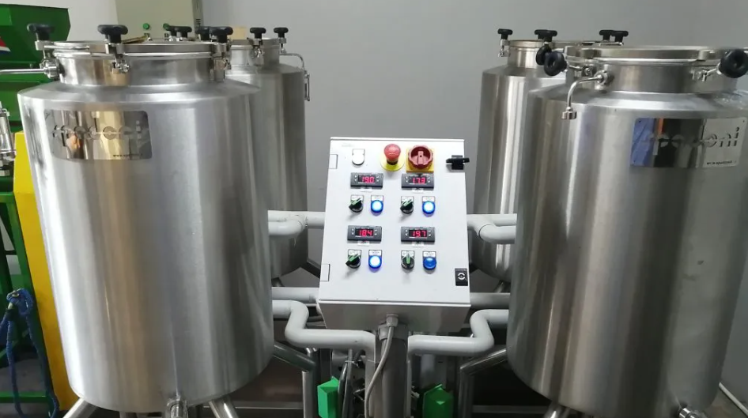

En un coup d'œil :
Process inspiré de l'œnologie (Beaujolais nouveau). Cerises entières placées en cuve saturée de CO₂ pur (>95%). Fermentation intracellulaire lente sans oxygène. Résultat : explosion aromatique précise (fruits rouges intenses, floral, notes vin/miel), acidité vive mais intégrée, texture veloutée. C'est le café de compétition par excellence.
Comprendre : La fermentation intracellulaire
Le principe de la macération carbonique
Différence fondamentale avec l'anaérobie simple :
| Critère | Anaérobie classique | Macération Carbonique |
|---|---|---|
| Atmosphère | O₂ chassé naturellement par CO₂ produit | CO₂ pur injecté/saturé (>95%) |
| Pression CO₂ | Atmosphérique (1 bar) | Légère surpression (1–2 bars) |
| Fermentation | Microbienne (levures/bactéries) | Intracellulaire (enzymes du fruit) + microbienne |
| Durée | 24–72h | 24–96h (plus lent) |
| Profil | Vineux, fruité fermenté | Floral-fruité intense, précis |
Ce qui change tout : la fermentation intracellulaire
En présence de CO₂ saturé, les cellules de la cerise, privées d'O₂, activent leur métabolisme anaérobie interne :
Enzymes intracellulaires (pectinases, β-glucosidases)
→ Dégradation sucres + pectines
→ Acide malique, lactique, alcools, esters
→ SANS rupture cellulaire immédiate
Résultat : Les arômes se forment à l'intérieur du fruit intact, créant une complexité et une précision impossible à atteindre autrement.
Histoire : Du Beaujolais au café
Origine œnologique :
La macération carbonique est une technique ancestrale du Beaujolais (France) pour produire des vins jeunes, fruités, à boire rapidement (Beaujolais Nouveau).
Principe : Grappes de raisin entières → cuve CO₂ → fermentation intracellulaire → vin fruité, léger, peu tannique.
Transfert au café (2015+) :
Des producteurs expérimentaux (Colombie, Costa Rica, Australie) adaptent la technique :
•Saša Šestić (champion WBC 2015) popularise le process
•Diego Bermudez (Colombie) développe des protocoles scientifiques
•Devient rapidement le process de référence en compétition
CM vs Natural vs Anaérobie : Le spectre
| Attribut | Natural | Anaérobie | Macération Carbonique |
|---|---|---|---|
| Fruité | Explosif, confituré | Vineux, fermenté | ✨ Précis, floral-fruité |
| Acidité | Douce, intégrée | Lactique, veloutée | Vive, phosphorique |
| Complexité | Superposition couches | Vineux + lactique | Multi-dimensionnel |
| Régularité | ⭐⭐ | ⭐⭐⭐⭐ | ⭐⭐⭐⭐⭐ |
| Coût | Faible | Moyen | Élevé (CO₂) |
En clair : CM = le plus expressif + le plus contrôlé, mais le plus technique et coûteux.
Maîtriser : Le protocole technique
Phase 1 : Récolte ultra-sélective
Objectif : Cerises parfaitement intactes (pas de fissures, pas de pression)
⚠️ CRITIQUE : Contrairement à l'anaérobie où on peut dépulper, la CM exige des cerises entières en parfait état.
Pourquoi ?
La fermentation intracellulaire nécessite une membrane cellulaire intacte. Une cerise fendue = fermentation microbienne classique (perte du bénéfice CM).
Tri ultra-rigoureux :
•Maturité homogène : °Brix ≥20, couleur uniforme
•Élimination totale de toute cerise abîmée, fendue, piquée
•Manipulation délicate (pas de pression, pas de chute)
•Lavage doux optionnel (réduire charge microbienne surface)
Test qualité :
•Presser doucement : chair cède sans éclater, peau reste intacte
•Inspection visuelle : 0 défaut visible (même microtraces)
Phase 2 : Préparation de la cuve et saturation CO₂
Équipement spécifique :
| Élément | Fonction | Spécifications |
|---|---|---|
| Cuve hermétique haute qualité | Résister surpression légère | Inox alimentaire, joints étanches |
| Source CO₂ | Saturer atmosphère | Bouteille CO₂ pur (≥99,5%) + détendeur |
| Manomètre | Contrôler pression | 0–3 bars, précision ±0,1 bar |
| Valve de sécurité | Éviter surpression | Tarage 2,5 bars |
| Thermomètre sonde | Suivre T° interne | Étanche, ±0,5°C |
| pH-mètre + Brix (optionnel) | Suivi fin fermentation | Haute précision |
Protocole de saturation :
Méthode 1 : Injection CO₂ avant fermeture (recommandée)
•Remplir cuve à 75–85% (cerises entières)
•Purger l'air : injecter CO₂ par le bas, laisser s'échapper par valve haute pendant 5–10 min
•Saturer : continuer injection jusqu'à ce que l'atmosphère soit >95% CO₂ (test : flamme s'éteint instantanément)
•Fermer hermétiquement et maintenir légère surpression (1,2–1,5 bars)
Méthode 2 : Neige carbonique (glace sèche)
•Placer 2–5 kg de neige carbonique au fond de la cuve
•Remplir progressivement de cerises
•Fermer immédiatement : la sublimation crée l'atmosphère CO₂
•✅ Avantage : pas besoin de bouteille
•❌ Inconvénient : difficile de doser précisément
Contrôle de l'atmosphère :
| Temps | CO₂ | O₂ | État |
|---|---|---|---|
| 0h (injection) | >95% | <5% | ✅ Saturé |
| 24h | 95–98% | <2% | Optimal |
| 48h+ | 93–97% | <3% | Maintenir |
Surveillance : Ré-injecter CO₂ si nécessaire (petites fuites, consommation par fermentation)
Phase 3 : Fermentation intracellulaire + microbienne
Durée typique : 24–96h (généralement 48–72h optimal)
Température cible :
| Plage T° | Profil | Risque |
|---|---|---|
| 10–15°C | Floral intense, esters légers, très lent | Stagnation possible |
| 15–18°C | ✅ Optimal : fruité précis, floral, équilibré | Très faible |
| 18–22°C | Fruité intense, vineux élégant | Faible |
| >22°C | Risque volatile acidity, phenolic | Moyen-élevé |
Recommandation : 16–18°C constant (chambre froide ou cave)
Ce qui se passe biologiquement :
Phase 1 : Fermentation intracellulaire (0–48h)
Les cellules de la cerise, saturées de CO₂, activent leurs enzymes internes :
Réactions clés :
•Pectinases → dégradent paroi cellulaire (lentement, sans rupture)
•Β-glucosidases → libèrent terpènes (linalol, géraniol) → floral
•Malate déshydrogénase → transforme acide malique → lactique + CO₂
•Pyruvate décarboxylase → produit éthanol + acétaldéhyde
Molécules formées :
•Phénylacétaldéhyde (miel, rose)
•Linalol, géraniol (jasmin, lavande, bergamote)
•Acide malique → malolactique (douceur)
•Esters légers (éthyl-acétate, isoamyl-acétate en faible quantité)
Particularité : Les arômes restent piégés dans les cellules intactes → concentration maximale
Phase 2 : Fermentation microbienne de surface (12–72h)
En parallèle, les levures et bactéries présentes sur la peau fermentent doucement :
•Production CO₂ supplémentaire (maintient saturation)
•Formation d'esters complémentaires (éthyl-butanoate, hexanoate)
•Acidification légère (pH 5,2 → 4,5)
Équilibre : Intracellulaire (60%) + Microbienne (40%) = profil unique CM
Suivi de la fermentation :
| Paramètre | Début | Milieu (36h) | Fin |
|---|---|---|---|
| pH | 5,5–6,0 | 4,8–5,2 | 4,2–4,6 |
| T° interne | Ambiante | +1–3°C | Stable |
| Pression | 1,2–1,5 bars | 1,3–1,6 bars | Stable |
| Odeur (test) | Fruité léger | ✅ Fruité intense, floral | Vineux doux |
Indicateurs de fin optimale :
•pH stabilisé 4,2–4,6
•Odeur : fruité explosif, floral net, pas de vinaigre
•Cerises : peau légèrement flétrie, mais intacte
•Test tactile : cerises plus molles mais non écrasées
⚠️ Ne JAMAIS dépasser 96h → risque phenolic/volatile acidity
Phase 4 : Dépressurisation et extraction
Protocole d'ouverture :
•Décompresser lentement (valve ouverte 2–5 min) pour éviter choc osmotique
•Ouvrir la cuve (attention : odeur CO₂ résiduel, ventiler la pièce)
•Inspecter les cerises :
•✅ Bon : peau intacte, légèrement flétrie, odeur fruité intense
•❌ Mauvais : cerises éclatées, odeur vinaigre/phenolic
Choix de traitement post-CM :
Option A : Dépulpage + séchage style Honey
•Dépulper les cerises
•Conserver le mucilage (déjà transformé)
•Sécher comme un Honey (10–15 jours)
Résultat : Fruité CM + douceur honey
Option B : Séchage en cerise entière (style Natural)
•Étaler directement sur lits africains
•Sécher comme un Natural (15–25 jours)
Résultat : Fruité CM maximal + corps dense
Option C : Lavage + séchage (style Lavé)
•Laver complètement (retirer pulpe + mucilage)
•Sécher en parche propre
Résultat : Clarté maximale, profil CM pur (floral-fruité précis)
Choix recommandé : Option A ou C selon profil recherché
Phase 5 : Séchage adapté
Quel que soit le choix, règle commune : Séchage très doux pour préserver les arômes volatils formés.
Paramètres :
| Phase | Durée | T° max | Brassage |
|---|---|---|---|
| Initiale | 3–4 j | 28°C | 5–6×/jour |
| Intermédiaire | 4–6 j | 32°C | 3–4×/jour |
| Finale | 3–5 j | 35°C | 2×/jour |
Vitesse : <1,0% H₂O/jour (le plus lent de tous les process)
Méthode : Lits africains sous ombre totale ou serre ombragée (éviter soleil direct = volatilisation esters)
Phase 6 : Repos en parche (critique)
Durée : 6–10 semaines minimum
Pourquoi c'est plus long que les autres process ?
Les arômes formés en CM sont extrêmement volatils (linalol, géraniol, phénylacétaldéhyde). Le repos permet leur polymérisation dans la matrice lipidique du grain → stabilisation.
Évolution typique :
•Semaine 0–2 : Profil "cru", volatile, instable
•Semaine 4–6 : Arômes s'intègrent, complexité émerge
•Semaine 8–10 : ✅ Profil optimal : floral + fruité + équilibre
Test de patience : Un CM torréfié à J+7 vs J+60 = 2 cafés totalement différents. Le second est transcendant.
Approfondir : Chimie et signature aromatique
Molécules clés du CM — Le festival floral-fruité
La CM se distingue par une explosion de terpènes et d'aldéhydes aromatiques, avec moins d'esters lourds que Natural/Anaérobie.
| Molécule | Famille | Arôme | Seuil (ppb) | CM vs Anaérobie |
|---|---|---|---|---|
| Linalol | Terpène | Jasmin, lavande | 5–10 | 10× supérieur |
| Géraniol | Terpène | Rose, citron vert | 5–10 | 8× supérieur |
| Phénylacétaldéhyde | Aldéhyde | Miel, rose | 5–10 | 5× supérieur |
| Isoamyl-acétate | Ester | Banane, fruit rouge | 0,5–2 | 3× supérieur |
| Éthyl-hexanoate | Ester | Pomme, fruit jaune | 1–5 | Similaire |
| Acétate de phényléthyle | Ester | Miel, rose intense | 0,5–1 | Présent (unique CM) |
| Acide malique → lactique | Transformation | Acidité douce, veloutée | — | Conversion élevée |
Molécules quasi absentes :
•Acide acétique (si bien fait)
•Furaneols lourds (peu de caramélisation)
•Composés soufrés
Pourquoi le profil est unique
Fermentation intracellulaire → libération terpènes (enzymes β-glucosidases)
CO₂ saturé → pression osmotique → concentration arômes dans cellules
Température basse → préservation composés volatils légers
Résultat : Profil floral-fruité intense, précis, "aérien" impossible à reproduire autrement.
Profil sensoriel — Le sommet aromatique
| Attribut | Lavé | Honey | Natural | Anaérobie | CM |
|---|---|---|---|---|---|
| Intensité aromatique | ⭐⭐⭐ | ⭐⭐⭐⭐ | ⭐⭐⭐⭐⭐ | ⭐⭐⭐⭐⭐ | ⭐⭐⭐⭐⭐ |
| Floral | ⭐⭐⭐ | ⭐⭐ | ⭐ | ⭐⭐ | ⭐⭐⭐⭐⭐ |
| Fruité précis | ⭐⭐⭐ | ⭐⭐⭐⭐ | ⭐⭐⭐ | ⭐⭐⭐⭐ | ⭐⭐⭐⭐⭐ |
| Acidité | ⭐⭐⭐⭐⭐ | ⭐⭐⭐ | ⭐⭐ | ⭐⭐⭐ | ⭐⭐⭐⭐⭐ |
| Corps | ⭐⭐ | ⭐⭐⭐⭐ | ⭐⭐⭐⭐⭐ | ⭐⭐⭐⭐ | ⭐⭐⭐⭐ |
| Complexité | ⭐⭐⭐⭐ | ⭐⭐⭐⭐ | ⭐⭐⭐⭐ | ⭐⭐⭐⭐⭐ | ⭐⭐⭐⭐⭐ |
Descripteurs typiques d'un CM réussi :
•Floral explosif : jasmin, lavande, bergamote, rose, fleur d'oranger
•Fruits rouges précis : fraise fraîche, framboise, cerise griotte
•Notes vinées élégantes : vin blanc, porto tawny, rhum arrangé
•Miel/cire d'abeille (phénylacétaldéhyde)
•Acidité phosphorique vive mais intégrée (malique + citrique)
•Texture veloutée, soyeuse (transformation malolactique)
•Finale longue, complexe, multi-dimensionnelle
En tasse, un bon CM est reconnaissable instantanément : explosion florale au nez, acidité vive mais soyeuse, fruité précis (pas confituré).
En pratique : Roast tips pour CM
Comportement du grain
Structure : Dépend du choix post-CM (honey-like, natural-like, ou washed-like)
Particularité : Concentration maximale de terpènes et aldéhydes volatils extrêmement fragiles.
Conséquence : Torréfaction la plus délicate de tous les process. Moindre erreur = destruction profil CM.
Profil recommandé (base Loring)
Charge : 185–190°C (plus basse que tous les autres)
↓
Drying : 5–6 min, ROR 18–22°C/min très progressif
→ évaporation douce SANS volatiliser terpènes
↓
Maillard : 20–25% (court !), ROR 10–12°C/min constant
→ juste assez pour structure, pas trop pour ne pas masquer floral
↓
Premier Crack : 195–200°C
↓
Développement : 10–12% (court)
→ ROR 6–8°C/min, descente rapide post-1C
→ ⚠️ Drop dès que crack ralentit
↓
Drop : 198–202°C (filtre) | 202–205°C (espresso light)
Pourquoi ce profil est spécifique
| Phase | Justification |
|---|---|
| Charge très basse | Préserver linalol, géraniol (volatils <200°C) |
| Drying long et doux | Libération progressive sans choc thermique |
| Maillard court | Éviter masquage floral par pyrazines/furaneols |
| Développement court | Garder fraîcheur florale, acidité vive |
| Drop précoce | Préserver TOUS les terpènes (fragiles !) |
Principe général : On ne "torréfie" pas vraiment un CM, on le "révèle" délicatement.
Un seul profil recommandé (filtre haute gamme)
Drop : 198–202°C
Développement : 10–11%
Résultat : Explosion florale maximale, fruité précis, acidité phosphorique, texture soyeuse
⚠️ CM et espresso : Risqué. L'acidité vive peut être agressive. Si vraiment nécessaire :
•Drop 203–205°C max
•Développement 12–13%
•S'attendre à profil moins floral, plus fruité-vineux
Recommandation forte : CM = filtre uniquement (V60, Chemex, AeroPress)
Erreurs fréquentes (toutes catastrophiques pour CM)
| Erreur | Symptôme | Correction |
|---|---|---|
| Charge >195°C | Floral brûlé instantanément | TOUJOURS <190°C |
| ROR trop élevé drying | Perte totale des terpènes | Doux, progressif |
| Maillard >30% | Floral masqué, caramel domine | Réduire 20–25% |
| Drop >205°C | Profil CM détruit, devient generic | Drop 198–202°C |
| Flux d'air excessif | Terpènes évacués trop vite | Modérer flux |
En CM, il n'y a PAS de marge d'erreur. Un profil raté = perte totale du potentiel (et du coût investi).
Les risques et défauts de la CM
Défauts liés au process
| Défaut | Cause | Molécules | Notes | Prévention |
|---|---|---|---|---|
| Volatile acidity | T° >22°C ou durée >96h | Acide acétique, éthyl-acétate (excès) | Vinaigre, piquant | T° 15–18°C, <72h |
| Phenolic | Contamination ou CO₂ impur | Crésols, guaiacol | Médicinal, plastique | CO₂ pur (≥99,5%), hygiène |
| Swampy | Fuite O₂ dans cuve | H₂S, méthanethiol | Soufré, marécage | Étanchéité parfaite |
| Overripe | Cerises endommagées au départ | Éthanol, acétate excès | Alcoolisé agressif | Tri ultra-rigoureux |
| Flat/Vegetal | T° trop basse ou durée trop courte | Peu de transformation | Tasse creuse, herbe | T° min 15°C, durée min 48h |
Défauts liés à la torréfaction
| Défaut | Cause roast | Impact |
|---|---|---|
| Floral détruit | Charge trop chaude ou drop tardif | Profil devient generic, perte totale |
| Baked | Maillard insuffisant | Céréale, terpènes présents mais non révélés |
| Phenolic roast | Surchauffe | Goût chimique apparaît |
Conclusion : La CM comme chef-d'œuvre technique
La macération carbonique incarne la quête ultime de précision aromatique.
Ce qu'elle apporte :
•Expression florale maximale (jasmin, lavande, bergamote)
•Fruité précis, "HD", multi-dimensionnel
•Acidité vive mais veloutée (transformation malolactique)
•Reproductibilité absolue (si protocole respecté)
•Profil de compétition (90+ points possibles)
Ce que cela coûte :
•Infrastructure lourde : cuves haute qualité, CO₂, chambre froide
•Coût matière : CO₂ pur (100–300€/lot selon taille)
•Savoir-faire pointu : courbe d'apprentissage 3–5 saisons
•Risque moyen-élevé : moindre erreur = perte totale
•Temps long : fermentation + repos = 2–3 mois avant torréfaction
Comment cela fonctionne, en résumé : Cerises entières parfaites → cuve saturée CO₂ pur → fermentation intracellulaire (enzymes du fruit) + microbienne légère → 48–72h à 16–18°C → extraction et séchage très doux → repos 8–10 semaines → torréfaction délicate <202°C.
Les résultats obtenus : Un café transcendant, multidimensionnel, inoubliable. Explosion florale au nez (jasmin, rose), fruité précis en bouche (fraise fraîche, cerise), acidité phosphorique vive mais soyeuse, finale longue et complexe. C'est le café qui fait dire "whoa" en cupping. Score typique bien exécuté : 88–92 points, parfois 93+.
Pour aller plus loin
Process connexes :
•Chapitre Process → Anaérobie : fermentation sans CO₂ saturé
•Chapitre Process → Lactic : focus bactéries lactiques
•Chapitre Process → Co-fermentation : CM + ajout substrats
Défauts :
•Chapitre Défauts → Phenolic, Volatile Acidity, Overripe
Chimie :
•Chapitre Chimie → Terpènes (linalol, géraniol)
•Chapitre Chimie → Fermentation intracellulaire vs microbienne
Torréfaction :
•Section Roast → Préservation composés ultra-volatils
💡 Note de formation : La CM est le sommet de la pyramide des process. Ne l'aborder qu'après maîtrise complète de l'anaérobie classique. C'est le process le plus coûteux, le plus technique, le plus risqué... et le plus gratifiant. Un CM réussi est une œuvre d'art liquide qui justifie 30–50€/kg en prix producteur et 80–120€/kg au détail. En compétition, c'est l'arme absolue : 90% des champions WBC/WBrC depuis 2015 ont utilisé du CM ou assimilé. Mais attention : un CM raté est une catastrophe commerciale (coût élevé, profil détruit). C'est le process où l'excellence du producteur ET du torréfacteur sont indissociables.